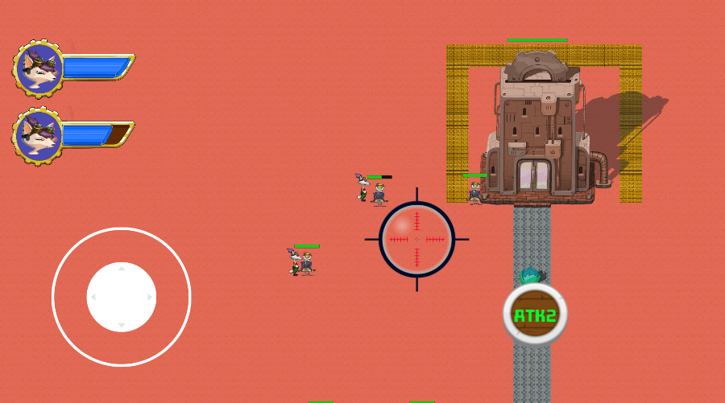

CastleBreaker

Role: Engineer and Designer
Team Size: 2
Software: Unity
2D action adventure combined with real time strategy elements. The player plays as multiple foxes but can only control one at a time. Destroy the enemy androids and keep every fox alive until the end to win.
How do we combine action adventure with real time strategy?
In this game, we explore the fundamental differences in gameplay between action adventure games and real time strategy.
We explore fast paced movement and high mechanical skills to appeal to players of the action adventure genre. Incorpoting
the swap mechanic and designing levels such that usage of the swap mechanic is neccessary for the game helps us add the real time strategy component.
The goal of this game is to attempt to provide